การวิเคราะห์วงจรลอจิก แบบคอมไบเนชัน
🎯 จุดประสงค์ของบทเรียน
- วิเคราะห์วงจรคอมไบเนชันพื้นฐาน เช่น AND-OR, AND-OR-Invert, Exclusive-OR และ Exclusive-NOR ได้
- สามารถใช้วงจร AND-OR และ AND-OR-Invert สำหรับการสร้างวงจรทำงานตามนิพจน์ SOP และ POS
- สามารถเขียนนิพจน์เอาต์พุตบูลีนสำหรับวงจรลอจิกแบบคอมไบเนชัน
- สามารถสร้างตารางค่าความจริงจากนิพจน์เอาต์พุตสำหรับวงจรลอจิกแบบคอมไบเนชัน
- สามารถออกแบบวงจรคอมไบเนชันจากนิพจน์บูลีน
- สามารถออกแบบวงจรคอมไบเนชันจากตารางค่าความจริง
🧭 ความเชื่อมโยงกับ มคอ.3
CLO3 อธิบายการวิเคราะห์และออกแบบวงจรพื้นฐานสำหรับการสร้างวงจรองค์ประกอบของระบบคอมพิวเตอร์
CLO5 อธิบายการทำงานของวงจรตรรกะพื้นฐานทั้งแบบวงจรผสมและวงจรเชิงลำดับในการนำไปใช้เป็นองค์ประกอบของระบบคอมพิวเตอร์
CLO10 แบ่งงานเป็นงานย่อย และมอบหมายงานให้สมาชิกในทีมรับผิดชอบเต็มกำลังความสามารถ
CLO11 อธิบายเป้าหมายของงานที่ได้รับมอบหมายกับผู้ร่วมทีมจนเข้าใจตรงกัน
กิจกรรม: บรรยาย / PBL · ปฏิบัติการ: ออกแบบวงจรคอมไบเนชันจากโจทย์ · มอบหมายโครงงานกลุ่มและการแบ่งงาน
การประเมิน: แบบฝึกหัดและรายงานผลการทดลอง (20%) · โครงงานกลุ่ม (20%) · สอบกลางภาค บทที่ 1–6 (30%)
6.1 วงจรลอจิกคอมไบเนชันพื้นฐาน
6.1.1 วงจรลอจิก AND-OR
รูปที่ 6.1 แสดงให้เห็นวงจร AND-OR ที่ประกอบด้วย AND gate 2 อินพุต จำนวน 2 ตัว และ OR gate ขนาด 2 อินพุตอีก 1 ตัว โดยจะเป็นวงจรสำหรับนิพจน์ SOP ที่มีเอาต์พุต X
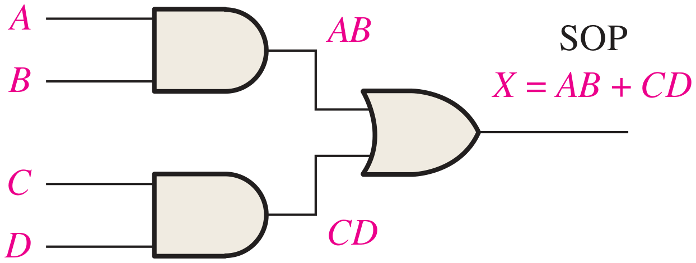
สำหรับวงจรนี้จะได้เอาต์พุตสำหรับทุก combination ที่แสดงให้เห็นในตารางที่ 6.1 ซึ่งจะสามารถได้ข้อสรุปว่า
สำหรับวงจรลอจิก AND-OR ขนาด 4 อินพุต เอาต์พุต X จะมีค่าเป็น HIGH (1) ถ้าทั้งอินพุต A และ B เป็น HIGH ทั้งคู่ หรือถ้าทั้งอินพุต C และ D เป็น HIGH
| อินพุต | ผลระหว่างทาง | เอาต์พุต | ||||
|---|---|---|---|---|---|---|
| A | B | C | D | AB | CD | X |
| 0 | 0 | 0 | 0 | 0 | 0 | 0 |
| 0 | 0 | 0 | 1 | 0 | 0 | 0 |
| 0 | 0 | 1 | 0 | 0 | 0 | 0 |
| 0 | 0 | 1 | 1 | 0 | 1 | 1 |
| 0 | 1 | 0 | 0 | 0 | 0 | 0 |
| 0 | 1 | 0 | 1 | 0 | 0 | 0 |
| 0 | 1 | 1 | 0 | 0 | 0 | 0 |
| 0 | 1 | 1 | 1 | 0 | 1 | 1 |
| อินพุต | ผลระหว่างทาง | เอาต์พุต | ||||
|---|---|---|---|---|---|---|
| A | B | C | D | AB | CD | X |
| 1 | 0 | 0 | 0 | 0 | 0 | 0 |
| 1 | 0 | 0 | 1 | 0 | 0 | 0 |
| 1 | 0 | 1 | 0 | 0 | 0 | 0 |
| 1 | 0 | 1 | 1 | 0 | 1 | 1 |
| 1 | 1 | 0 | 0 | 1 | 0 | 1 |
| 1 | 1 | 0 | 1 | 1 | 0 | 1 |
| 1 | 1 | 1 | 0 | 1 | 0 | 1 |
| 1 | 1 | 1 | 1 | 1 | 1 | 1 |
โจทย์ตัวอย่างนี้เป็นระบบที่อยู่ในโรงงานเคมี ซึ่งมีถังสารเคมีที่เป็นของเหลวอยู่ 3 ถัง (A, B และ C) ในการแยกสารตั้งต้น แต่ละถังมีเซนเซอร์วัดระดับสารเคมีที่จะส่งสัญญาณ HIGH เมื่อระดับของสารเคมีลดต่ำลงกว่าขีดที่กำหนดเอาไว้
จงออกแบบวงจรที่สามารถเฝ้าติดตามระดับสารเคมีในแต่ละถัง ซึ่งจะทำการแจ้งเตือนเมื่อระดับสารเคมีลดลงต่ำกว่าขีดที่กำหนดไว้จำนวนสองถัง
แสดงวิธีทำ
จากรูปข้างล่าง เราจะใช้วงจร AND-OR สำหรับการออกแบบวงจรเพื่อให้ทำงานได้ตามเป้าประสงค์ที่กำหนด กล่าวคือ ถ้าเราต้องการรู้ว่าเมื่อใดที่มีถังที่สารเคมีมีระดับต่ำกว่าขีดที่กำหนดจำนวน 2 ถัง ระบบต้องทำการเตือนขึ้นมา ทั้งนี้เซนเซอร์วัดระดับในแต่ละถังจะส่งสัญญาณ HIGH เมื่อสารเคมีพร่องลงต่ำกว่าขีด เราจึงต้องทำการนำสัญญาณจากแต่ละถังมาจับคู่กันให้ครบ ซึ่งจะได้เป็น 3 กรณี คือ AB, AC และ BC จากรูปจะเห็นว่าได้มีการนำสัญญาณแต่ละคู่ไปป้อนยัง AND gate ชื่อ G1, G2 และ G3 ตามลำดับ ซึ่งเมื่อในแต่ละถังมีสารเคมีอยู่เหนือขีดกำหนดแล้ว จะทำให้เอาต์พุตจากเซนเซอร์ของทั้ง 3 ถังมีค่าเป็น LOW ทั้งหมด ซึ่งเป็นสภาวะปกติ เป็นเหตุให้เมื่อนำมาป้อนเข้าที่อินพุตของ G1, G2 และ G3 แล้วจะเกิดผลลัพธ์ที่เอาต์พุตเป็น LOW และทำให้ X ซึ่งเป็นผลลัพธ์ของการนำเอาสัญญาณเหล่านี้มา OR กันเป็น LOW ซึ่งตัว Low-level indicator ที่เห็นในรูปจะไม่ทำงานเนื่องจากเป็นสภาวะปกติ
แต่ถ้ามีคู่ใดที่มีระดับสารเคมีลดต่ำลงจนทำให้มีค่าเป็น HIGH (1) ก็จะทำให้เอาต์พุตของ AND gate ตัวนั้นมีค่าเป็น HIGH ทันที ซึ่งปกติจะมีค่าเป็น LOW (0) และเมื่อวิเคราะห์ต่อไปจะเห็นว่า เมื่อเอาต์พุตตัวใดตัวหนึ่งเป็น HIGH ขึ้นมา จะเป็นตัวป้อนไปยัง OR gate ปลายทาง ที่เมื่ออินพุตตัวใดตัวหนึ่งเป็น HIGH ก็จะทำให้เอาต์พุต X เป็น HIGH (หรือกรณีที่ลดต่ำลงสามถังพร้อมกันก็จะแจ้งเตือนเช่นกัน) ซึ่งตัว Low-level indicator ก็จะทำงาน โดยอาจจะไปต่อกับหลอดไฟหรือตัวกำเนิดเสียงเพื่อทำการแจ้งเตือนได้ เป็นต้น
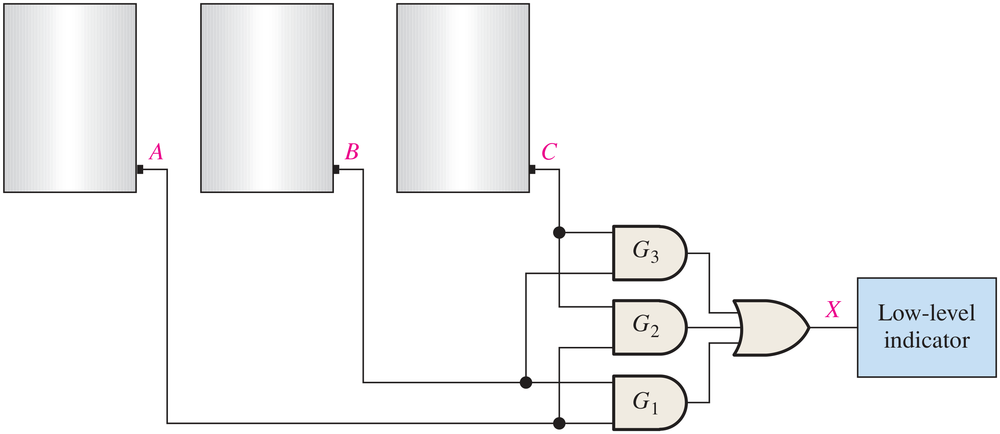
6.1.2 ลอจิก AND-OR-Invert
ถ้าเราพิจารณาเฉพาะส่วนของวงจร AND-OR ที่ผ่านมา จะเห็นว่าเป็นวงจรที่สร้างจากนิพจน์ SOP แต่เมื่อนำเอาเอาต์พุตของวงจรนี้มาผ่าน Inverter ก็จะกลายเป็นวงจรที่เรียกว่า AND-OR-Invert ซึ่งเมื่อนำมาวิเคราะห์แล้วจะเห็นว่าวงจรนี้สามารถเป็นตัวแทนของนิพจน์แบบ POS ได้ ดังสมการบูลีนต่อไปนี้
รูปที่ 6.2 แสดงให้เห็นถึงวงจร AND-OR-Invert ที่เป็นการสร้างจากนิพจน์ POS ของเอาต์พุต
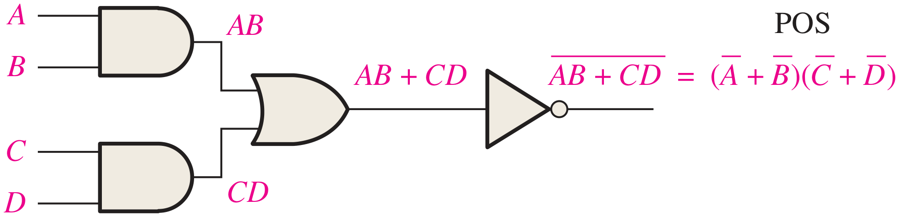
สำหรับปฏิบัติการของวงจร AND-OR-Invert นั้นสามารถสรุปได้เป็น
สำหรับวงจรลอจิก AND-OR-Invert ขนาด 4 อินพุต เอาต์พุต X จะมีค่าเป็น LOW (0) ถ้าทั้งอินพุต A และ B เป็น HIGH ทั้งคู่ หรือถ้าทั้งอินพุต C และ D เป็น HIGH
ซึ่งตารางค่าความจริงของวงจรนี้สามารถได้จากการปรับปรุงตารางที่ 6.1 โดยการเปลี่ยนคอลัมน์เอาต์พุตจาก 0 ให้เป็น 1 และเปลี่ยนจาก 1 เป็น 0 เท่านั้น
6.1.3 วงจร Exclusive-OR (XOR)
วงจรนี้มีความสำคัญมากจนกำหนดให้เป็นเกทลอจิกที่มีสัญลักษณ์ประจำตัว อย่างที่ได้กล่าวไปแล้วในบทที่ 3 ซึ่งในความจริงแล้ววงจรนี้เป็นวงจรที่มีการใช้ Inverter จำนวน 2 ตัว AND gate จำนวน 2 ตัว และ OR gate จำนวน 1 ตัว โดยมีการเชื่อมต่อวงจรดังที่เห็นในรูปที่ 6.3 (ก) และรูปที่ 6.3 (ข) เป็นสัญลักษณ์ของ XOR
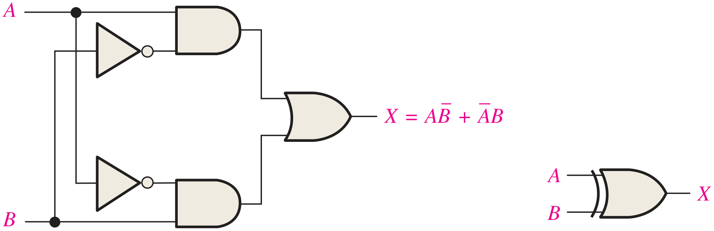
นิพจน์เอาต์พุตสำหรับวงจรนี้คือ
ตารางที่ 6.2 แสดงผลการปฏิบัติการของ XOR ซึ่งจะเห็นว่าเอาต์พุตจะเป็น HIGH สำหรับกรณีที่อินพุตทั้งสองมีค่าที่ตรงกันข้าม และ XOR จะมีเครื่องหมายปฏิบัติการเป็น ⊕ ซึ่งจะทำให้เราสามารถเขียนนิพจน์ของ XOR ที่เป็น X = AB + AB ด้วยการใช้เครื่องหมายดังกล่าวได้เป็น
| อินพุต | เอาต์พุต | |
|---|---|---|
| A | B | X |
| 0 | 0 | 0 |
| 0 | 1 | 1 |
| 1 | 0 | 1 |
| 1 | 1 | 0 |
6.1.4 วงจร Exclusive-NOR (XNOR)
วงจรนี้เป็น invert ของวงจร XOR ซึ่งเราสามารถวิเคราะห์นิพจน์ได้ดังต่อไปนี้
สังเกตว่าเอาต์พุต X จะมีค่าเป็น HIGH ก็ต่อเมื่ออินพุตทั้งสองมีค่าเดียวกัน ซึ่งเราสามารถสร้างวงจร XNOR ได้โดยการทำการ Invert จากวงจร XOR ดังที่เห็นในรูปที่ 6.4 (ก) หรือจะสร้างจากนิพจน์ AB + AB ดังที่แสดงในรูปที่ 6.4 (ข) ก็ได้
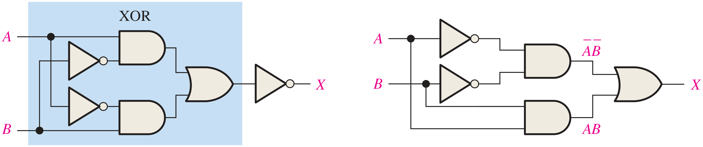
6.1.5 การสร้างวงจรลอจิกแบบคอมไบเนชัน
ในหัวข้อนี้จะเป็นการศึกษาการสร้างวงจรลอจิกจากนิพจน์บูลีนและจากตารางค่าความจริงด้วยการใช้ตัวอย่างต่าง ๆ โดยเราจะมีการประยุกต์ใช้เทคนิคการลดรูปนิพจน์ที่ได้เรียนจากบทที่ 5 ร่วมด้วย
6.1.5.1การสร้างวงจรจากนิพจน์บูลีน
พิจารณานิพจน์ต่อไปนี้
จะเห็นว่านิพจน์นี้ประกอบด้วย 2 พจน์ ได้แก่ AB และ CDE ซึ่งเป็นโดเมนขนาด 5 ตัวแปร พจน์แรกเป็นการ AND กันระหว่าง A กับ B ส่วนพจน์ที่สองเป็นการ AND กันระหว่าง C, D และ E แล้วนำทั้งสองมาทำการ OR กัน ซึ่งจะได้เอาต์พุต X ซึ่งจะได้โครงสร้างของวงจรจากการวิเคราะห์นิพจน์ดังต่อไปนี้
จากนิพจน์ดังกล่าวนี้ ลำดับการปฏิบัติการจะต้องเกิดจากการ AND กันของแต่ละพจน์ อันได้แก่ AB และ CDE ให้เสร็จสิ้น แล้วนำผลลัพธ์จากการ AND กันนี้มาทำการ OR กันอีกครั้ง ซึ่งจะให้ผลลัพธ์เอาต์พุต X ทำให้เราได้วงจรการทำงานที่ต้องใช้ AND gate ขนาด 2 อินพุตสำหรับพจน์ AB และใช้ AND gate ขนาด 3 อินพุตสำหรับพจน์ CDE และเราจะใช้ OR gate ขนาด 2 อินพุตเพื่อปฏิบัติการกับผลลัพธ์ที่ได้จาก AND gate ทั้งสอง ซึ่งจะเขียนเป็นวงจรได้ตามรูปที่ 6.5
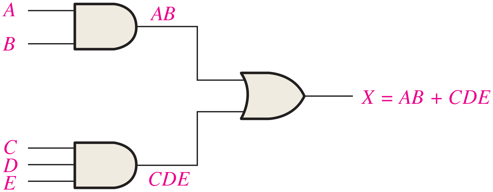
สำหรับตัวอย่างต่อไปจะสร้างวงจรจากนิพจน์
ซึ่งเมื่อเรานำนิพจน์นี้มาแยกออกเป็นพจน์ต่าง ๆ เราจะได้พจน์ AB และพจน์ (CD + EF) ที่ทำการ AND กันอยู่ และถ้าเรานำพจน์ CD + EF มาแยกต่อ จะได้พจน์ย่อยที่เป็นการ AND กันระหว่าง C กับ D และระหว่าง E กับ F และสองพจน์นี้นำมา OR กันอีกทีหนึ่ง ดังนั้นเมื่อเราพิจารณาโครงสร้าง เราจะได้ดังต่อไปนี้
ขั้นตอนในการสร้างวงจรสำหรับนิพจน์นี้ทำได้ดังต่อไปนี้
- นำ Inverter มาใช้เพื่อให้ได้ผลลัพธ์ D
- นำ AND gate ขนาด 2 อินพุตมา 2 ตัวสำหรับการสร้าง CD และ EF
- นำ OR gate ขนาด 2 อินพุตเพื่อสร้าง CD + EF
- นำ AND gate ขนาด 3 อินพุตเพื่อสร้างผลลัพธ์ X
วงจรนี้สามารถเขียนได้ดังรูปที่ 6.6 (ก) ซึ่งจะต้องใช้เกท 4 ตัวกับ inverter อีก 1 ตัวที่เป็นตัวปฏิบัติการตั้งแต่อินพุตไปถึงเอาต์พุต ซึ่งจะทำให้เกิดการใช้เวลาที่เรียกว่า propagation delay ซึ่งเพิ่มขึ้นทุกครั้งจากการที่สัญญาณถูกปฏิบัติการจาก inverter และเกท ดังนั้นยิ่งมีการใช้เกทมากเท่าใด ก็ยิ่งเกิด propagation delay มากขึ้น
ทั้งนี้ถ้าเราลองเปลี่ยนแปลงนิพจน์ดังกล่าวให้เป็น SOP ที่เทียบเท่ากัน เราจะสามารถแปลงนิพจน์ได้เป็น
จะเห็นว่าเมื่อทำการวาดวงจรดังรูปที่ 6.6 (ข) แล้ว จะมีปริมาณของเกทที่ใช้ระหว่างอินพุตต้นทางจนถึงเอาต์พุตปลายทางลดลง ส่งผลให้เกิด propagation delay ลดลง
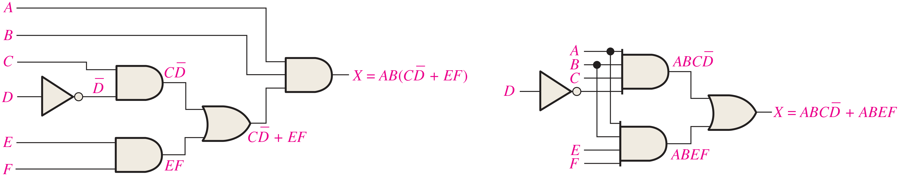
6.1.5.2การสร้างวงจรจากตารางค่าความจริง
ถ้าโจทย์กำหนดตารางค่าความจริงให้มาแทนที่จะเป็นนิพจน์ สิ่งที่ต้องทำคือการระบุพจน์การคูณได้จากแถวที่มีค่าเอาต์พุตเป็น 1 โดยการหาค่าไบนารีของตัวแปรอินพุต ยกตัวอย่างเช่น ในตารางค่าความจริงที่ปรากฏในตารางที่ 6.3 เราจะได้ค่าไบนารี A, B และ C เป็น 011 และ 100 ซึ่งจะได้พจน์การคูณเป็น ABC และ ABC ดังตาราง
| อินพุต | เอาต์พุต | พจน์การคูณ | ||
|---|---|---|---|---|
| A | B | C | X | |
| 0 | 0 | 0 | 0 | |
| 0 | 0 | 1 | 0 | |
| 0 | 1 | 0 | 0 | |
| 0 | 1 | 1 | 1 | ABC |
| 1 | 0 | 0 | 1 | ABC |
| 1 | 0 | 1 | 0 | |
| 1 | 1 | 0 | 0 | |
| 1 | 1 | 1 | 0 | |
นิพจน์ SOP ที่ได้จากตารางค่าความจริงจะเป็นการ OR ระหว่างพจน์การคูณทั้งสองพจน์ที่ได้ ดังนั้นจะได้นิพจน์เป็น
ซึ่งเราสามารถเขียนเป็นวงจรได้ดังรูปที่ 6.7
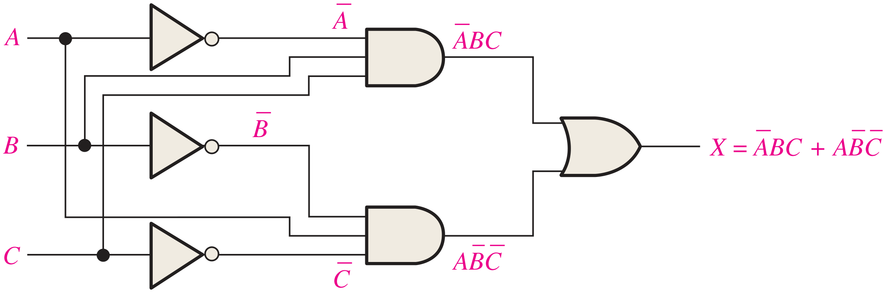
จากนิพจน์จะมี complement ของตัวแปรอยู่ 3 ตัว ได้แก่ A ของพจน์แรก กับ B และ C ของพจน์ที่สอง จึงต้องนำ inverter 3 ตัวมาใช้สำหรับการสร้างสัญญาณขาอินพุตให้แก่ A, B และ C ตามลำดับ และจะใช้ AND gate แบบ 3 อินพุตจำนวน 2 ตัวเพื่อนำมาสร้างตามพจน์ทั้งสองพจน์ที่ปรากฏอยู่ และเมื่อได้เอาต์พุตจากการ AND แล้วก็นำมาเป็นอินพุตของ OR gate ที่จะปฏิบัติการเพื่อให้ได้เอาต์พุต X ตามที่นิพจน์ระบุเอาไว้
จงออกแบบวงจรเพื่อให้ปฏิบัติการตามตารางค่าความจริงที่ปรากฏด้านล่างนี้
| อินพุต | เอาต์พุต | พจน์การคูณ | ||
|---|---|---|---|---|
| A | B | C | X | |
| 0 | 0 | 0 | 0 | |
| 0 | 0 | 1 | 0 | |
| 0 | 1 | 0 | 0 | |
| 0 | 1 | 1 | 1 | ABC |
| 1 | 0 | 0 | 0 | |
| 1 | 0 | 1 | 1 | ABC |
| 1 | 1 | 0 | 1 | ABC |
| 1 | 1 | 1 | 0 | |
แสดงวิธีทำ
เมื่อต้องการให้เอาต์พุต X = 1 จะทำให้เราได้พจน์ทั้งหมด 3 พจน์ เมื่อนำมารวมกันเป็นนิพจน์ SOP จะได้เป็น
ดังนั้นเราต้องการ inverter 3 ตัว AND gate ขนาด 3 อินพุตจำนวน 3 ตัว และ OR gate ขนาด 3 อินพุตจำนวน 1 ตัว โดยจะมีวงจรดังต่อไปนี้
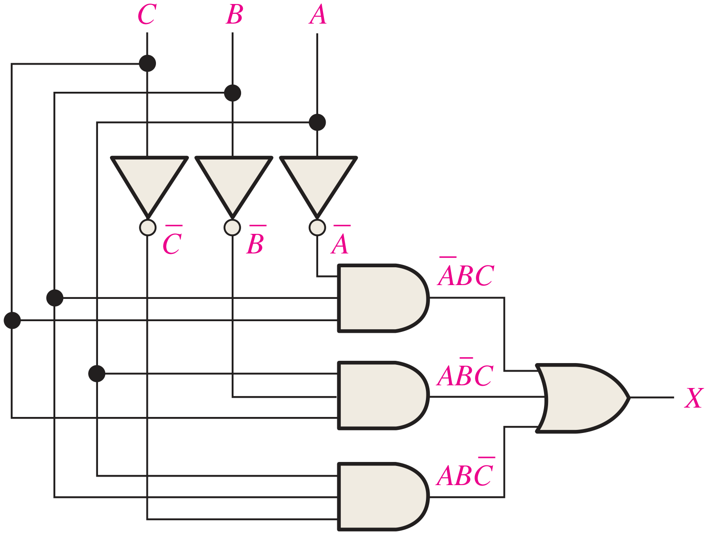
จงออกแบบวงจรลอจิกที่มีตัวแปรอินพุต 4 ตัว ซึ่งจะสร้างสัญญาณเอาต์พุตเป็น 1 ในกรณีที่มีอินพุต 3 ตัวเป็น 1 พร้อมกัน
แสดงวิธีทำ
เมื่อเราพิจารณาตารางค่าความจริงของตัวแปรอินพุตจำนวน 4 ตัว A, B, C และ D เราจะได้ 16 combination แต่กรณีที่มีอินพุตเป็น 1 พร้อมกัน 3 ตัวนั้นมีเพียง 4 กรณี ได้แก่ 0111, 1011, 1101 และ 1110 หรือเขียนเป็นพจน์การคูณจะได้เป็น ABCD, ABCD, ABCD และ ABCD ตามลำดับ ดังนั้นนิพจน์ SOP สำหรับวงจรนี้จะได้เป็น
ซึ่งการสร้างวงจรนี้ต้องการ inverter จำนวน 4 ตัว AND gate ขนาด 4 อินพุตจำนวน 4 ตัว และ OR gate ขนาด 4 อินพุตจำนวน 1 ตัว และสามารถเขียนเป็นผังวงจรได้ดังต่อไปนี้
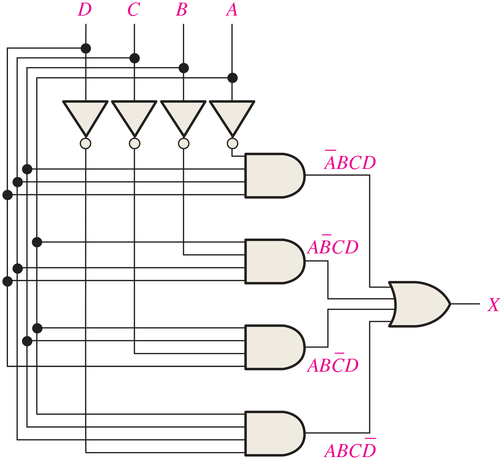
จงลดรูปวงจรลอจิกแบบคอมไบเนชันที่ปรากฏในรูปข้างล่างนี้ให้เล็กที่สุด
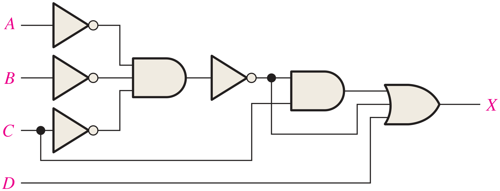
แสดงวิธีทำ
นิพจน์ของวงจรนี้จะเป็น
การลดรูปวงจรนี้เราต้องอาศัยทฤษฎีบทของ DeMorgan เป็นหลักในการวิเคราะห์ ซึ่งจะได้ดังต่อไปนี้
ซึ่งวงจรที่ลดรูปมาจะเป็นการใช้ OR gate ขนาด 4 อินพุตเพียงตัวเดียวเท่านั้น ดังรูป
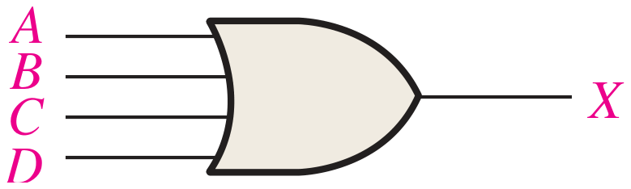
จงลดรูปวงจรที่เห็นในรูปข้างล่างนี้ (ในรูปจะไม่แสดงให้เห็น inverter เพื่อลดความซับซ้อน)
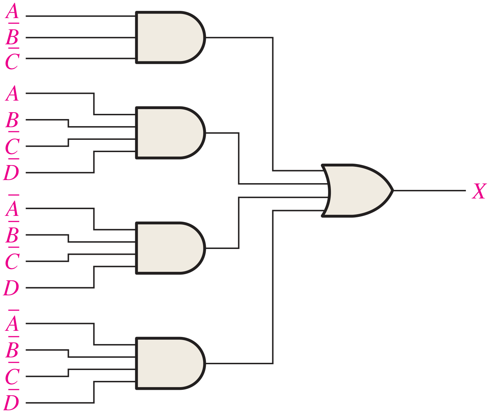
แสดงวิธีทำ
ก่อนอื่นทำการหานิพจน์ของวงจรนี้ ซึ่งเราจะได้เป็น
จากนิพจน์นี้เราจะเห็นว่ามีพจน์แรกที่ไม่เป็นพจน์การคูณมาตรฐาน ดังนั้นเมื่อเราจะทำการลดรูปด้วยการใช้แผนผังคาร์โนห์ เราจะต้องทำการขยายพจน์แรกเพื่อให้เข้ารูปมาตรฐานเสียก่อน ซึ่งเราจะได้ดังต่อไปนี้
นำนิพจน์ SOP มาตรฐานที่ได้มาทำการจัดลงในแผนผังคาร์โนห์แบบ 4 ตัวแปรเพื่อทำการลดรูปนิพจน์ และเขียนวงจรที่ลดรูปแล้วจะได้ดังต่อไปนี้
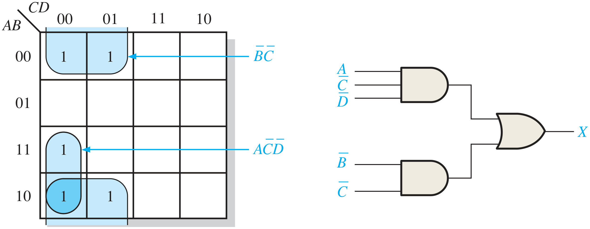
ดังนั้นนิพจน์ที่ลดรูปแล้วคือ X = BC + ACD
- จงสร้างวงจรจากนิพจน์บูลีนต่อไปนี้
- X = ABC + AB + AC
- X = AB(C + DE)
- จงสร้างวงจรที่มีอินพุตขนาด 3 ตัวแปร ที่จะได้เอาต์พุตเป็น 1 เฉพาะเมื่ออินพุตทั้งสามมีค่าเป็น 1 ทั้งหมด และเมื่ออินพุตทั้งสามมีค่าเป็น 0 ทั้งหมด
- ทำการลดรูปนิพจน์บูลีนในข้อที่ 1 ให้อยู่ในรูป SOP ที่เล็กที่สุด แล้วเขียนวงจรที่ได้จากการลดรูปนี้
6.2 การปฏิบัติการของวงจรลอจิกกับอินพุตที่เป็นสัญญาณพัลส์
แต่ละเกทในวงจรลอจิกนั้น ไม่ว่าสัญญาณที่เข้ามาที่อินพุตจะเป็นสัญญาณที่คงที่ หรือสัญญาณที่เปลี่ยนแปลงไปตามเวลาเนื่องจากวงจรใด ๆ ก็จะมีตารางค่าความจริงคงที่ ไม่มีการเปลี่ยนแปลง สำหรับการเรียนรู้ในส่วนนี้จะเป็นการเรียนรู้ผ่านตัวอย่างดังต่อไปนี้
จงหารูปสัญญาณเอาต์พุต X ของวงจรที่เห็นในรูป ซึ่งมีรูปสัญญาณอินพุต A, B และ C ดังที่แสดง
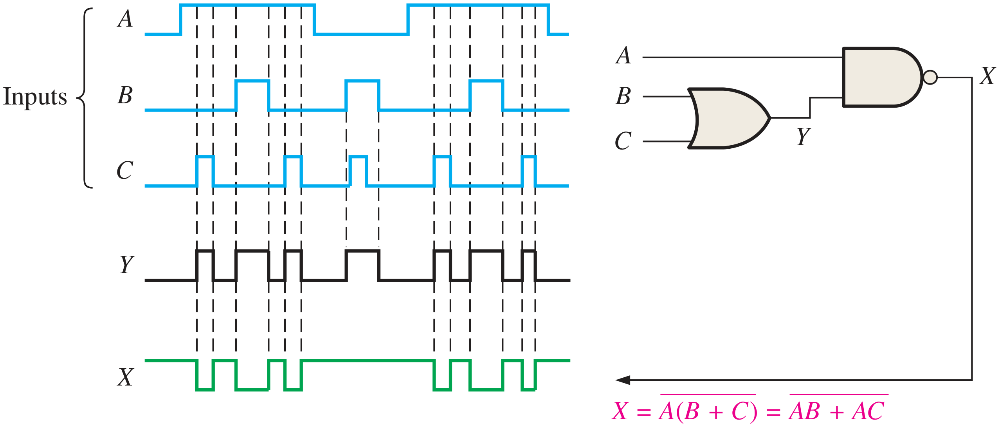
แสดงวิธีทำ
นิพจน์เอาต์พุต X = A(B + C) = AB + AC บ่งให้เห็นว่าเอาต์พุต X มีค่าเป็น LOW เมื่อ
- ทั้ง A และ B เป็น HIGH หรือ
- ทั้ง A และ C เป็น HIGH หรือ
- อินพุตทั้งหมดเป็น HIGH
ซึ่งรูปสัญญาณเอาต์พุต X จะได้ดังที่เห็นจากรูปข้างบน สำหรับ Y นั้นเป็นสัญญาณที่ได้จาก OR gate ที่ปฏิบัติกับสัญญาณอินพุต B และ C
จงวาดผังเวลาของสัญญาณที่ได้จากวงจรดังรูปข้างล่าง ซึ่งแสดงให้เห็นเอาต์พุตจากเกท G1, G2 และ G3 ที่ป้อนด้วยสัญญาณอินพุต A และ B ดังที่ระบุเอาไว้
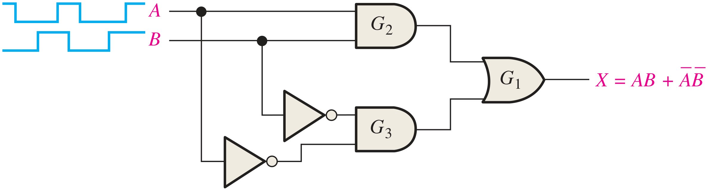
แสดงวิธีทำ
เมื่ออินพุตทั้งสองเป็น HIGH หรือเมื่ออินพุตทั้งสองเป็น LOW เอาต์พุต X จะเป็น HIGH ซึ่งก็คือวงจร XNOR นั่นเอง
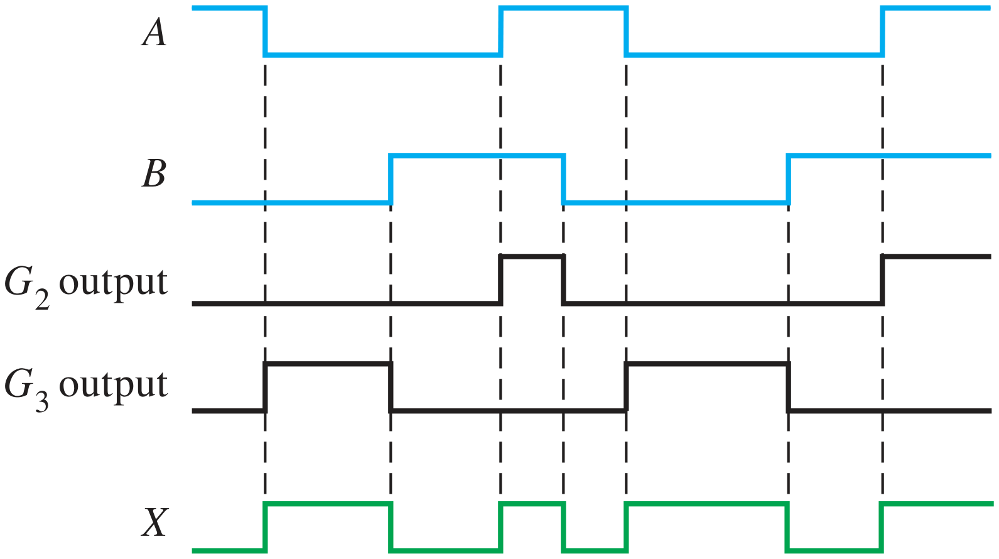
จงหารูปสัญญาณเอาต์พุต X ของวงจรลอจิก โดยหาจากสัญญาณระหว่างทาง Y1, Y2, Y3 และ Y4 โดยที่รูปสัญญาณอินพุต A, B, C และ D เป็นดังที่กำหนด
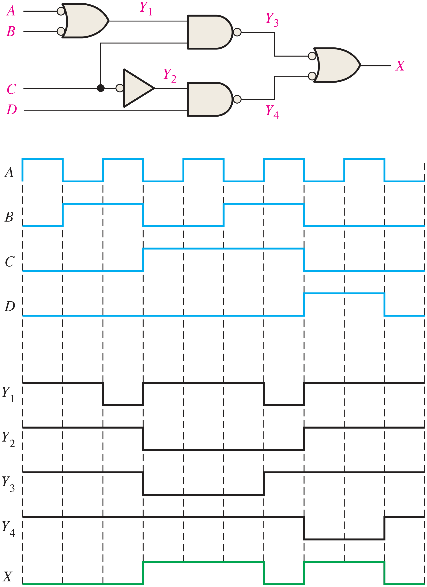
จงเขียนรูปสัญญาณของเอาต์พุต X ของวงจรในรูป
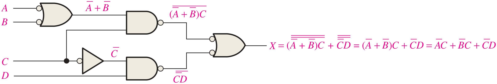
แสดงวิธีทำ
พิจารณาแต่ละสัญญาณที่อยู่ระหว่างทางเพื่อวิเคราะห์รูปสัญญาณผลลัพธ์
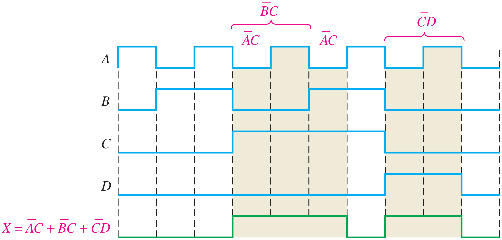
สรุปท้ายบท
- วงจร AND-OR สร้างนิพจน์ SOP เช่น X = AB + CD ส่วนวงจร AND-OR-Invert ให้เอาต์พุต X = AB + CD ซึ่งเทียบเท่านิพจน์ POS (A + B)(C + D)
- XOR: X = AB + AB = A ⊕ B เป็น HIGH เมื่ออินพุตต่างกัน ส่วน XNOR: X = AB + AB เป็น HIGH เมื่ออินพุตเหมือนกัน
- การสร้างวงจรจากนิพจน์บูลีน ให้แยกนิพจน์เป็นพจน์ย่อยแล้วเรียงลำดับการปฏิบัติการ NOT → AND → OR ตามโครงสร้างของนิพจน์
- การแปลงนิพจน์ให้อยู่ในรูป SOP ช่วยลดจำนวนเกทระหว่างอินพุตถึงเอาต์พุต และลด propagation delay
- การสร้างวงจรจากตารางค่าความจริง ให้เขียนพจน์การคูณจากแถวที่เอาต์พุตเป็น 1 แล้วนำมา OR กันเป็นนิพจน์ SOP
- วงจรที่ซับซ้อนลดรูปได้ด้วยทฤษฎีบทของ DeMorgan และแผนผังคาร์โนห์
- เมื่ออินพุตเป็นสัญญาณพัลส์ ตารางค่าความจริงของวงจรยังคงเดิม จึงหารูปสัญญาณเอาต์พุตได้โดยพิจารณาสัญญาณระหว่างทางทีละช่วงเวลา
แบบทดสอบท้ายบท
เลือกคำตอบ ระบบจะเฉลยพร้อมคำอธิบายทันที (ไม่มีการบันทึกคะแนน ใช้สำหรับทบทวนด้วยตนเอง)
ปฏิบัติการสัปดาห์ที่ 7 · ออกแบบวงจรคอมไบเนชันจากโจทย์ และมอบหมายโครงงานกลุ่ม
ตามแผนการสอนใน มคอ.3 สัปดาห์นี้ใช้การเรียนรู้แบบโครงงานเป็นฐาน (PBL) — ฝึกกระบวนการออกแบบครบวงจร ตั้งแต่โจทย์ → ตารางค่าความจริง → นิพจน์ → ลดรูป → วงจร → ต่อจริง และเริ่มโครงงานกลุ่ม
📋 ใบงานปฏิบัติการที่ 5 (สัปดาห์ที่ 7)
ขั้นตอนการออกแบบ (ใช้ทุกโจทย์): ① กำหนดอินพุต/เอาต์พุตและความหมายของ 0/1 ② เขียนตารางค่าความจริง ③ เขียน SOP มาตรฐาน ④ ลดรูปด้วยแผนผังคาร์โนห์ ⑤ วาดวงจรและเลือกไอซี ⑥ ต่อวงจรและทดสอบครบทุกกรณี
- เตือนระดับสารเคมี (ตัวอย่างที่ 6.1): ต่อวงจร X = AB + AC + BC ด้วย 7408 + 7432 ใช้สวิตช์แทนเซนเซอร์ LED แทน indicator
- Majority voter 3 อินพุต: เปรียบเทียบกับข้อ 1 — เป็นวงจรเดียวกันหรือไม่ อภิปราย
- ตรวจจับ “3 ใน 4” (ตัวอย่างที่ 6.3): ลดรูปก่อนต่อ แล้วนับจำนวนไอซีที่ประหยัดได้
- XOR จากเกทพื้นฐาน: ต่อ AB + AB ด้วย 7404 + 7408 + 7432 เทียบกับ 7486 ป้อนสัญญาณนาฬิกา 1 kHz ที่อินพุต A และสวิตช์ที่ B สังเกตผังเวลาบนออสซิลโลสโคป (หัวข้อ 6.2)
- ใช้ NAND ล้วน: แปลงวงจรข้อ 1 เป็น NAND-NAND แล้วต่อด้วย 7400 เทียบผล
ส่ง: ตารางค่าความจริง · แผนผังคาร์โนห์ · วงจรพร้อมเบอร์ไอซีและขา · ผลทดสอบ (ประเมินในหมวดแบบฝึกหัดและรายงานผลการทดลอง 20%) — ใช้แบบจำลอง “สร้างวงจร AND-OR” ในหัวข้อ 6.1.5 ตรวจงานได้
👥 มอบหมายโครงงานกลุ่ม (สัปดาห์ที่ 7–15 · 20%)
กลุ่มละ 3–4 คน ออกแบบวงจรดิจิทัลขนาดเล็กที่ใช้ความรู้ในวิชานี้ ต่อวงจรจริงหรือจำลอง/เขียน Verilog ให้ทำงานได้ และนำเสนอในสัปดาห์ที่ 15
- ระบบเตือนภัย/เฝ้าระวังด้วยเซนเซอร์หลายตัว
- เครื่องลงคะแนน (voting) แสดงผลบน 7-segment
- เกมทายเลข/ลูกเต๋าดิจิทัล
- นาฬิกา/ตัวจับเวลา (ใช้วงจรนับ บทที่ 9)
- ตัวควบคุมไฟจราจร (เครื่องสถานะ บทที่ 10)
- สัปดาห์ 7: ตั้งทีม เลือกหัวข้อ แบ่งงานเป็นงานย่อย และมอบหมายผู้รับผิดชอบ (CLO10)
- สัปดาห์ 9: ส่งข้อเสนอโครงงาน (เป้าหมาย อินพุต/เอาต์พุต แผนงาน) ที่ทุกคนเข้าใจตรงกัน (CLO11)
- สัปดาห์ 12: รายงานความก้าวหน้า และปัญหา (CLO12)
- สัปดาห์ 15: นำเสนอผลงาน + สรุปบทความเทคนิคใหม่ (CLO12, CLO13)
- ประเมินตามสภาพจริง: ผลงานวงจร · การทำงานเป็นทีม · รายงาน · การนำเสนอ